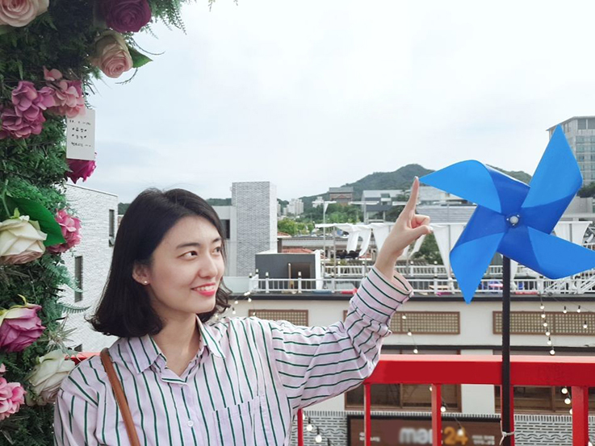
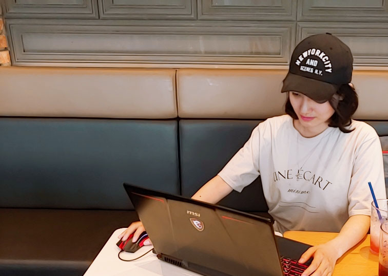

Name : Ju Ock , Kim
Birth year / day : 1991. 10. 9
Home address : Daejeon Yooseong-gu song Jeong-gil 64 , 181
-College / Major-
Graduated at Dongduk University in 2013.
My major was Digital Art Craft.
-Work Experience-
2017.2~2018.6 (1 and half year)
After graduating, I worked as a web designer at small jewelry company in Seoul.
I managed the website and worked for renewl project.
Make Web banners and web site design , uploaded the products (jewelry) , Photo shooting.
-Certification-
Computer Graphics 2012.5(photoshop/illustrator)
Driver license. 2016.5
-Another Skills-
HTML / CSS
TOEIC / TOEIC SPEAKING
685 / Lv.6 (2018.12)
-Contact-
Phone number : 010-2820-0347

